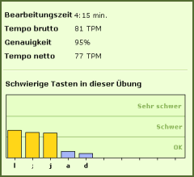

TypingMaster erkennt auch die Tasten, mit denen Sie Schwierigkeiten haben und empfiehlt Ihnen, diese zu wiederholen. Die hierfür zugrunde liegende Berechnung basiert auf der Zahl falsch geschriebener Buchstaben oder Zeichen und berücksichtigt auch die Zahl der Korrekturen unter Nutzung der Rücktaste. Schließlich wird auch bewertet, ob Sie bei bestimmten Tasten länger brauchen als normalerweise. Wenn Sie eine Übung beendet haben, sehen Sie als Ergebnis u.a. die schwierigen Tasten dieser Übung. Am Anfang stehen die schwierigsten, am Ende die leichtesten. Eine Übersicht über Ihre schwierigen Tasten sehen Sie auch, wenn Sie auf "Wiederholen" klicken. Diese Grafik zeigt Ihnen eine Gesamtauswertung über alle Übungen im Kurs. |
 |